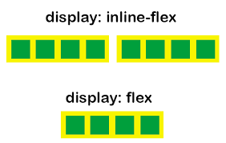

Dirección de los elementos flexibles
La propiedad flex-direction define la dirección principal, es decir, la dirección en la que se colocan
los
elementos flexibles en los contenedores.
Los posibles valores de la propiedad flex-direction son:
row
row-reverse
column
column-reverse
Tipos de cajas flexibles: flex y inline-flexflex, inline-flex

Existen dos tipos de contenedores flexibles: de bloque y en-línea.
La propiedad display permite definir el tipo de contenedor flexible:
flex: el contenedor se comporta como un bloque, es decir, ocupa todo el espacio horizontal disponible.
inline-flex: el contenedor se comporta como un elemento en-línea (ocupa sólo el espacio horizontal
necesario y pueden colocarse unos detrás de otros en la misma línea)